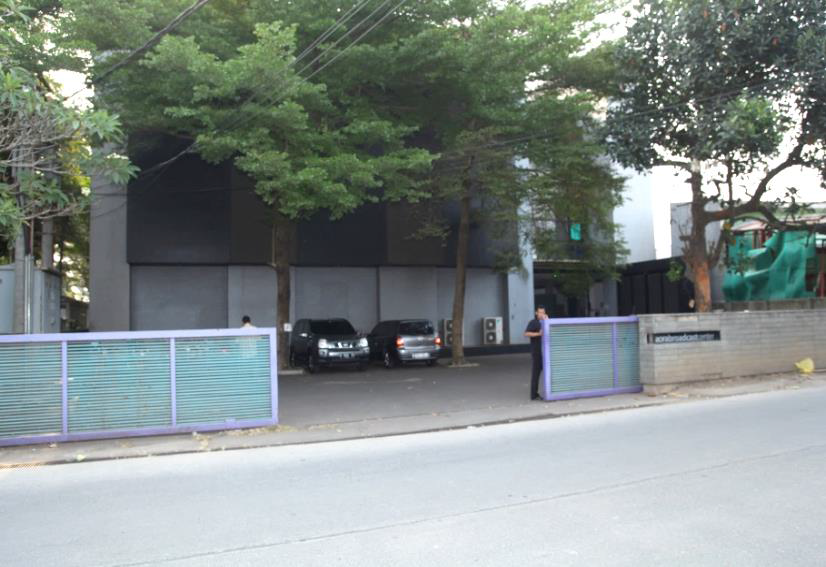
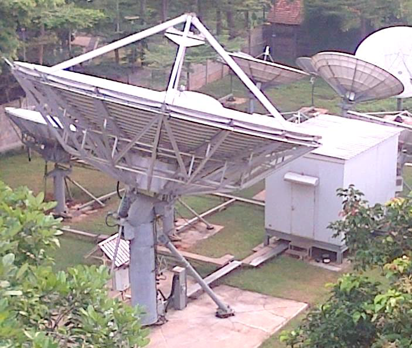
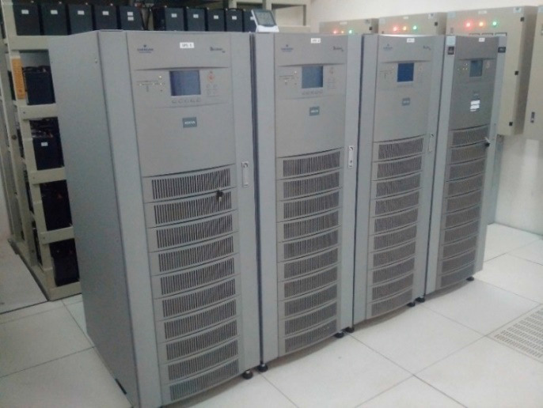
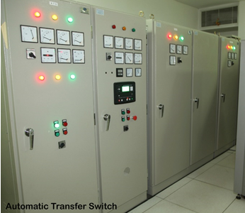
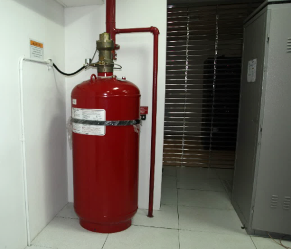
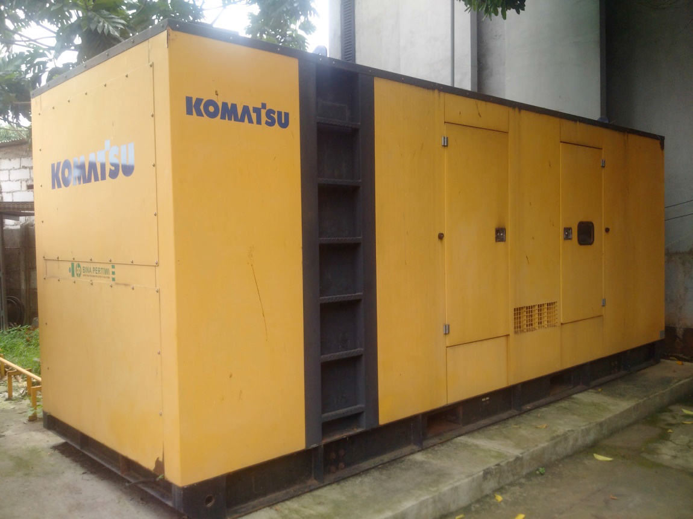
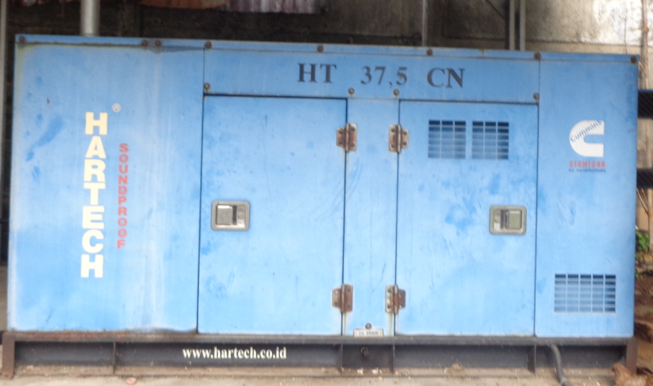
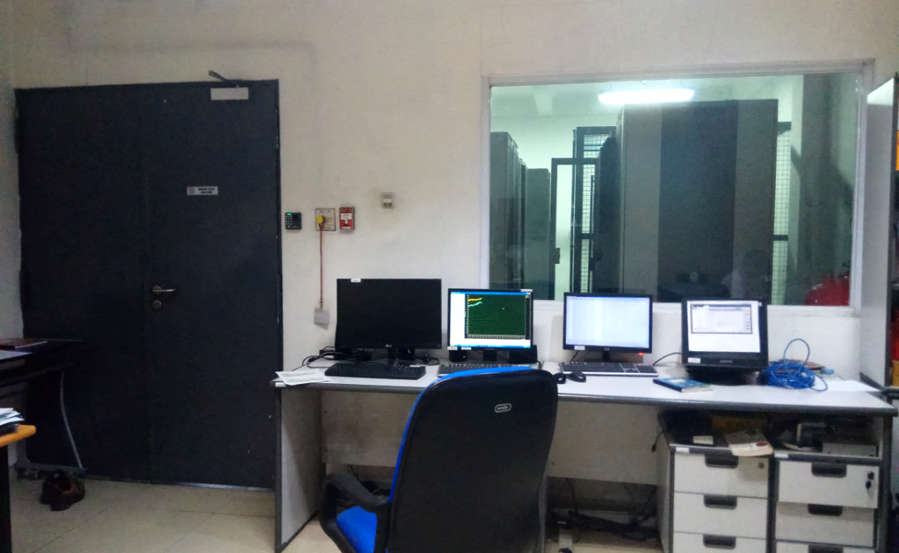

Fasilitas Bintaro merupakan salah satu lokasi operasional infrastruktur telekomunikasi yang digunakan untuk mendukung kegiatan operasional sistem komunikasi satelit, pengelolaan perangkat jaringan, serta integrasi layanan komunikasi yang beroperasi dalam ekosistem jaringan perusahaan.
Lingkungan operasional di dalam fasilitas ini dirancang untuk mendukung keberlangsungan operasional perangkat komunikasi yang beroperasi secara berkelanjutan. Infrastruktur yang tersedia memungkinkan integrasi antara sistem komunikasi satelit, jaringan terestrial, serta platform komputasi yang digunakan dalam penyediaan layanan jaringan.
Fasilitas ini juga berfungsi sebagai titik operasional bagi perangkat jaringan yang terhubung dengan berbagai sistem komunikasi eksternal, termasuk konektivitas backbone fiber optic serta sistem komunikasi berbasis satelit.
Perangkat jaringan yang beroperasi di dalam fasilitas ini mencakup berbagai sistem transmisi digital, router, serta perangkat switching yang digunakan untuk mengelola lalu lintas data dalam jaringan komunikasi. Infrastruktur ini memungkinkan integrasi antara berbagai sistem layanan yang berjalan pada platform komunikasi perusahaan.
Fasilitas Bintaro juga menyediakan lingkungan operasional bagi sistem komputasi dan perangkat server yang digunakan untuk mendukung berbagai kebutuhan sistem informasi serta aplikasi jaringan. Infrastruktur ini dirancang untuk memastikan stabilitas operasional perangkat yang memerlukan lingkungan dengan kontrol operasional yang terstruktur.
Integrasi jaringan dalam fasilitas ini memungkinkan interkoneksi antara berbagai sistem komunikasi yang beroperasi pada jaringan perusahaan. Infrastruktur konektivitas ini mendukung pertukaran data serta transmisi informasi antara berbagai platform komunikasi yang terhubung dalam ekosistem jaringan.
Fasilitas Bintaro dilengkapi dengan infrastruktur teleport yang mendukung komunikasi antara jaringan terestrial dan satelit komunikasi. Sistem ini memungkinkan proses transmisi sinyal melalui mekanisme uplink dan downlink yang digunakan dalam distribusi data maupun komunikasi jarak jauh.
Antena satelit berdiameter besar digunakan untuk mendukung proses transmisi sinyal dengan stabilitas yang tinggi. Infrastruktur ini memungkinkan komunikasi dengan berbagai sistem satelit yang digunakan dalam operasional jaringan komunikasi perusahaan.
Integrasi antara sistem teleport dan jaringan backbone memungkinkan distribusi data dari jaringan satelit menuju infrastruktur jaringan terestrial yang terhubung dengan berbagai sistem layanan komunikasi.


Operasional perangkat jaringan dan sistem komunikasi di dalam fasilitas didukung oleh infrastruktur kelistrikan yang dirancang untuk menjaga stabilitas pasokan daya terhadap perangkat kritikal.
Sistem kelistrikan dilengkapi dengan perangkat Uninterruptible Power Supply (UPS) yang berfungsi menjaga kestabilan suplai daya terhadap perangkat jaringan serta sistem komunikasi yang beroperasi secara kontinu.
Selain itu, generator cadangan tersedia sebagai sumber daya alternatif apabila terjadi gangguan pada sumber daya utama sehingga operasional perangkat dapat tetap berjalan.
Lingkungan operasional perangkat elektronik di dalam fasilitas dikendalikan melalui sistem pengaturan suhu dan kelembaban yang dirancang untuk menjaga kondisi operasional perangkat tetap stabil.
Sistem pendinginan berbasis precision air conditioning digunakan untuk menjaga distribusi suhu yang konsisten pada area perangkat jaringan maupun perangkat komputasi yang beroperasi dalam fasilitas.
Sensor lingkungan digunakan untuk memonitor kondisi suhu serta kelembaban secara real-time sehingga perubahan kondisi lingkungan dapat terdeteksi lebih awal oleh tim operasional.




Fasilitas dilengkapi dengan sistem deteksi kebakaran yang dirancang untuk mendeteksi potensi gangguan melalui sensor lingkungan yang terintegrasi dengan sistem alarm fasilitas.
Sistem pemadaman kebakaran menggunakan teknologi pemadaman berbasis gas yang dirancang untuk melindungi perangkat elektronik tanpa menyebabkan kerusakan pada sistem yang beroperasi.
Perlindungan tambahan terhadap infrastruktur mencakup sistem grounding serta perlindungan terhadap gangguan listrik seperti lonjakan tegangan yang dapat mempengaruhi stabilitas operasional perangkat.

Operasional fasilitas dipantau melalui sistem monitoring yang memungkinkan pengawasan terhadap perangkat jaringan serta kondisi infrastruktur secara real-time.
Sistem monitoring ini membantu tim teknis dalam mengidentifikasi potensi gangguan operasional secara dini serta melakukan tindakan penanganan yang diperlukan untuk menjaga stabilitas sistem yang beroperasi di dalam fasilitas.